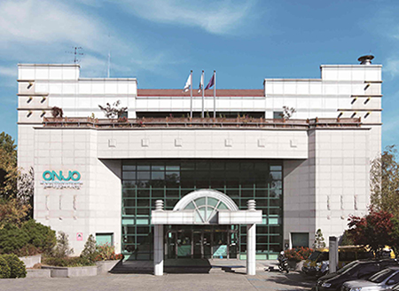

이름
온조대왕문화체육관
소재지
서울특별시 강동구 고덕로 285
설명
강동구도시관리공단에서 운영하는 체육시설.
누구나 참여할 수 있는 다양한 문화 체육 프로그램 운영을 통해
구민의 '삶의 질' 향상을 위해 노력하는 것이 운영기본방침.
대체육관을 포함해 헬스장,수영장,필라테스실 등이 있다.
대중교통
버스 : 340,342,3318,강동03 등
지하철 : 5호선 고덕역 (도보 5분) 또는 상일동역 (도보 7분)